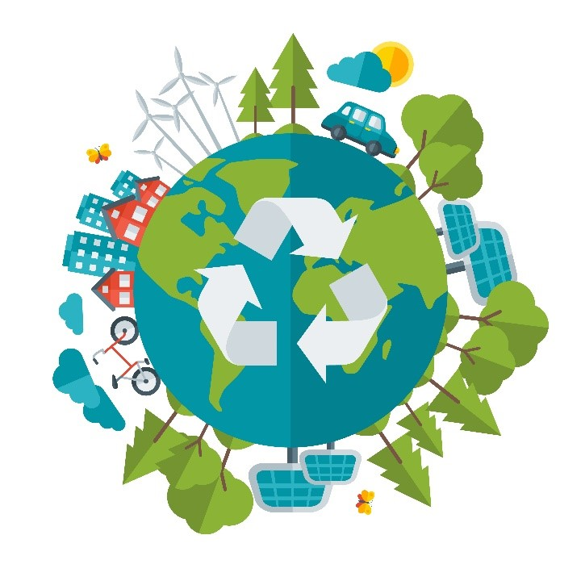

El medio ambiente es el conjunto de elementos naturales y artificiales que posibilitan la existencia de los seres humanos y demás organismos en un espacio y tiempo determinados.
El medio ambiente involucra todos los organismos vivos y las características físicas del lugar. Además incluye las modificaciones realizadas por el ser humano, como vías, edificaciones y elementos decorativos.
El medio ambiente se caracteriza por sus factores bióticos y abióticos. Los factores bióticos están representados por los seres vivos del medio ambiente: las plantas, los animales, los hongos y demás microorganismos.
La luz, la temperatura, el agua, el aire y el relieve terrestre son los factores abióticos del medio ambiente. Son aquellos elementos físicos que afectan la vida de los organismos en su medio ambiente.
Los recursos naturales son los elementos de que dispone el ser humano para satisfacer sus necesidades económicas, sociales y culturales. Se clasifican en:
Recursos naturales no renovables: son aquellos que tienen un tiempo de explotación limitado ya que no se regeneran. Por ejemplo: los minerales, el carbón y el petróleo.
Recursos naturales renovables: son aquellos que vuelven a surgir en la naturaleza a través de un ciclo, o por medio de la reproducción. Por ejemplo: la flora, la fauna, el agua y el suelo.
Importancia del Medio Ambiente
Todos los organismos obtienen del medio ambiente todos los elementos que necesitan para vivir: desde el aire y el agua, hasta el refugio y el alimento que les permite crecer, desarrollarse y obtener energía. Mantener el equilibrio del medio ambiente es fundamental para mantener la vida en la Tierra tal como la conocemos.
Además, los seres humanos utilizan una gran cantidad de recursos naturales del medio para cubrir sus necesidades . Por eso el ser humano debe conocer y cuidar sus interacciones con el medio ambiente para gestionar de manera sostenible los recursos naturales que permiten su crecimiento económico y su desarrollo.
Entre las principales razones para cuidar el medio ambiente podemos destacar las siguientes:
Asegurar la supervivencia de la especie humana.
Favorecer la supervivencia y evolución del resto de seres vivos.
Permitir que haya equilibrio ecológico.
No hay un planeta B en el que podamos vivir como en la Tierra, por lo que es nuestro único hogar y el de las futuras generaciones.
Cómo cuidar el Medio Ambiente?
Para evitar la destrucción del medio ambiente y la supervivencia de los seres vivos y el desarrollo humano, es necesario tomar los recaudos y las acciones necesarias. En primer lugar, se debe hacer un buen uso de los recursos naturales, no utilizarlos de manera indiscriminada, y fijar la atención en cuestiones como el cambio climático y la protección de la biodiversidad.
Para llevar adelante esta tarea de protección medioambiental es importante que todos los actores de la sociedad tomen conciencia y se involucren. Es necesario exigir a los Estados y gobernantes que promuevan el cuidado del medio ambiente y controlen el accionar de las industrias, empresas y de la comunidad científica.

También desde los hogares cada individuo puede tomar medidas frente al consumo y la producción, y también cambiar hábitos y rutinas hacia otras más sustentables como:
Evita quemar basura, hojas y otros objetos, así como hacer fogatas en bosques o en plena ciudad.
Reutiliza al máximo todos los artículos o productos antes de deshacerte de ellos. Por ejemplo, usa las hojas de papel por ambos lados; transforma las latas en lapiceros, joyeros o macetas. ¡Dale vuelo a tu imaginación! Desecha sólo lo que ya no se pueda volver a usar.
Utilizar la energía de manera consciente: apagar las luces, evitar mantener aparatos enchufados cuando no se están utilizando.
Clasifica los residuos inorgánicos en forma independiente según su tipo; aplasta las latas de aluminio para reducir su volumen; junta y aplasta todos los envases y botellas de plástico, esto facilita su clasificación y reciclaje.
No tires basura en las calles.
Antes de lavar los trastos, retira los residuos orgánicos (comida) y deposítalos en un bote o bolsa; no los arrojes por el drenaje ni los revuelvas con los residuos inorgánicos.
Reduce la cantidad de residuos que generas. Prefiere lavar que desechar: en fiestas y días de campo emplea utensilios lavables; para tus bebidas en la escuela o el trabajo utiliza contenedores que se puedan usar muchas veces. Emplea productos en envases rellenables.